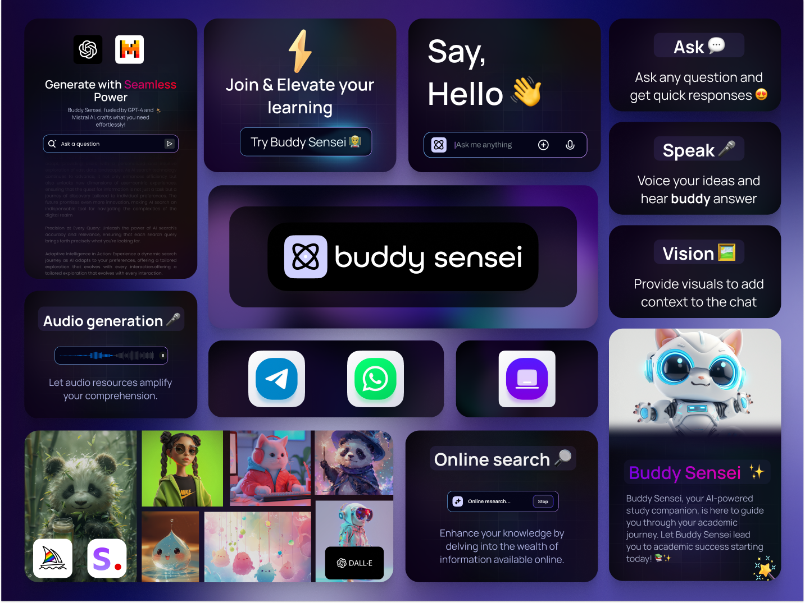

📚🎉 Tout comme demander un coup de main à ton pote de classe préféré, tu peux maintenant obtenir l'aide d'un super bot intelligent sur une tonne de matières scolaires ! Des maths à l'histoire en passant par la littérature, Buddy Sensei est là pour toi. Envoie-lui un message et découvre instantanément des conseils sensationnels et bien plus encore ! 🤖
